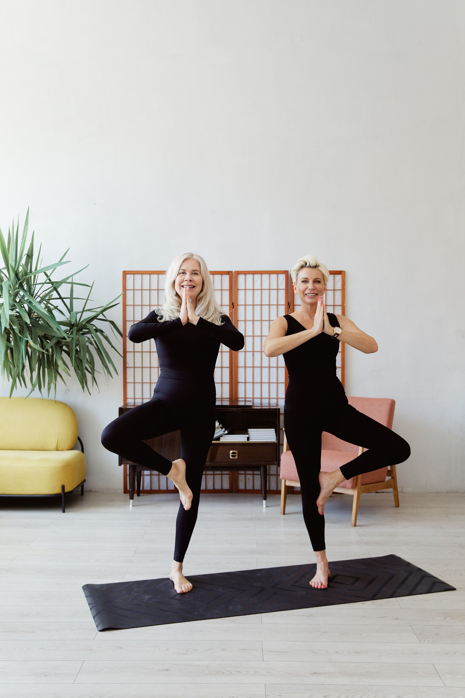

Improving Balance After 65: A Gentle Yoga Approach

Falls are the leading cause of injury among older adults — but balance is a skill, and like any skill, it can be practiced. Gentle yoga, done with support, is one of the safest and most enjoyable ways to rebuild it.
Why balance fades with age
Three systems keep us steady: leg and core strength, the inner ear, and vision. All three naturally decline with age, and medications or conditions like neuropathy can accelerate the change. The encouraging news: regular gentle practice measurably improves all three.
5 balance builders (always with support)
- Heel-to-Toe Stand (30 sec): Place one foot directly in front of the other, like standing on a tightrope, hands on your chair or counter.
- Supported Tree Pose (20 sec each side): Stand beside your chair, rest one hand on the back, and place the sole of one foot against your standing leg's calf or ankle — never the knee.
- Single-Leg Lift (10 reps each side): Facing the chair, lift one foot an inch off the floor and hold for a breath, then switch.
- Tai-Chi Inspired Weight Shift (1 min): Hands on the chair, slowly shift your weight from side to side, noticing the subtle work in your feet and ankles.
- Eyes-Open to Eyes-Closed (optional, 10 sec): Only with firm support and a wall nearby, briefly close your eyes while standing tall. This trains the inner ear.
Make your home fall-proof
- Remove loose rugs and cords from practice areas.
- Add night-lights between the bedroom and bathroom.
- Review medications with your doctor — some affect balance.
- Check your vision yearly; even small changes matter.
Our Friday Chair Yoga + Balance class dedicates extra time to exactly these skills, with an instructor watching your form in real time on Zoom.
This article is for general educational purposes and is not medical advice. Always speak with your healthcare provider before beginning a new exercise routine. Read our Health Disclaimer.